De Soares
Avaliação no Google · há cerca de 2 meses
Indico muito! Bom profissionalismo, e trabalho muito bem feito. A garantia é de 5 anos, isso é muito bom!!!
Instalação sob medida com redes resistentes, garantia de 5 anos e material com proteção anti-UV.
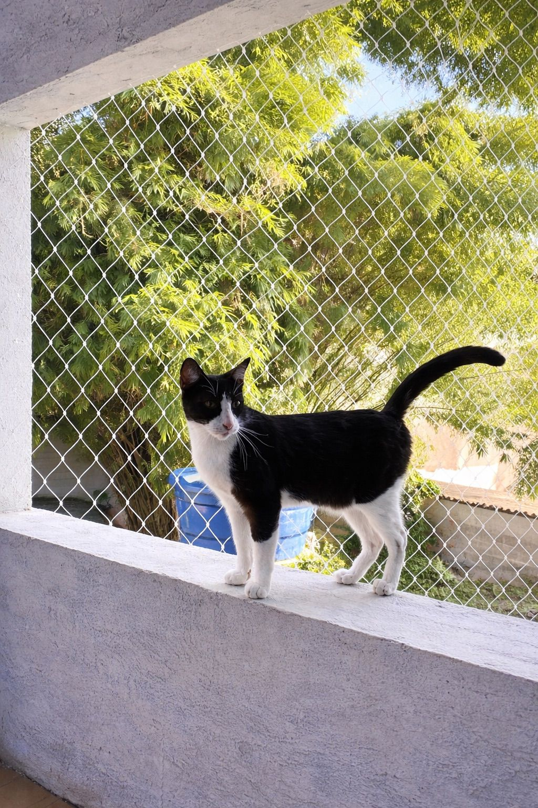
Soluções sob medida com foco em proteção, acabamento e clareza no atendimento.
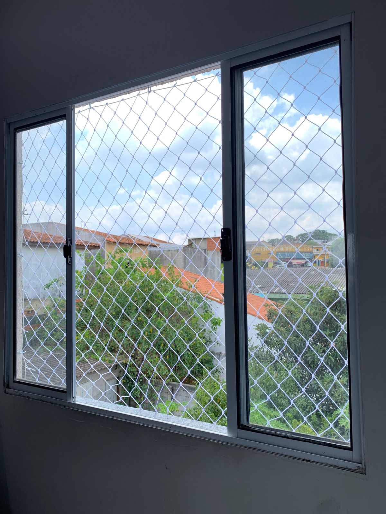
Proteção para vãos e aberturas com atenção ao encaixe, tração e acabamento.
Falar no WhatsApp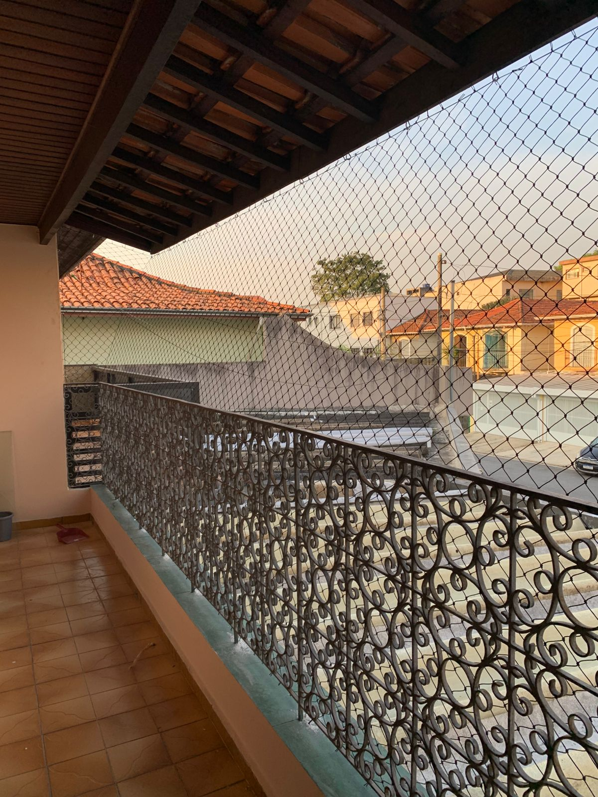
Segurança em sacadas, inclusive em apartamentos, com análise de pontos de fixação.
Pedir orçamento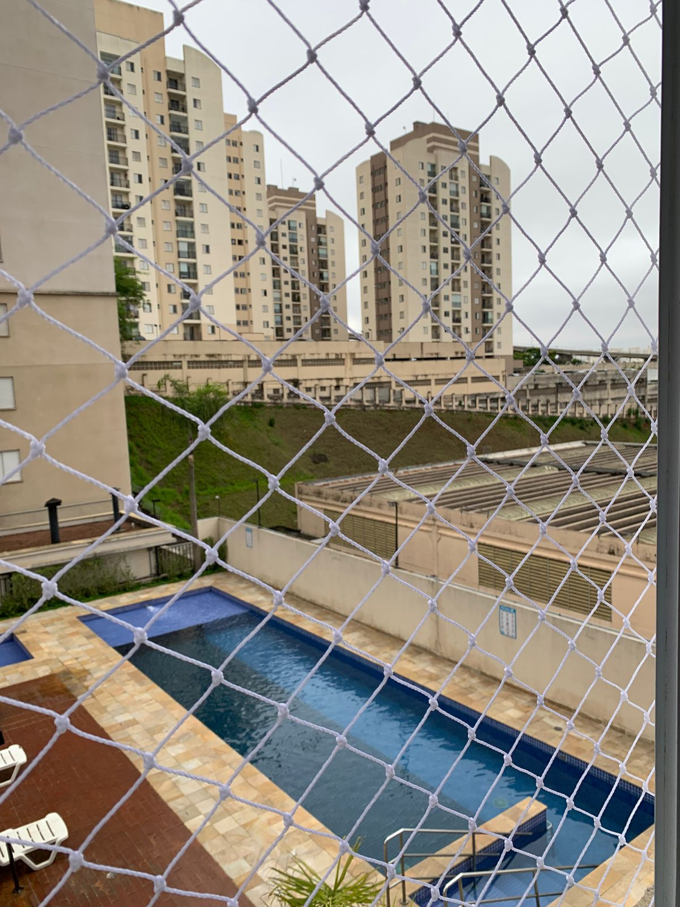
Instalação adaptada a vãos, frentes e regras de condomínio, quando aplicável.
Pedir orçamento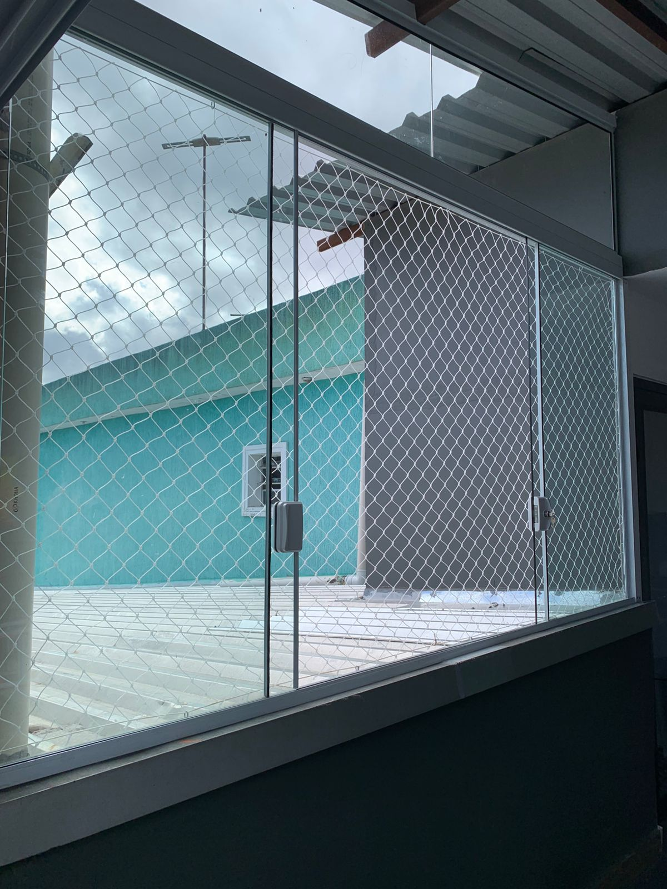
Mais tranquilidade no dia a dia, com vedação segura e boa aderência à estrutura.
Falar no WhatsAppRede indicada para reduzir riscos de queda e escape em aberturas e sacadas.
Falar no WhatsApp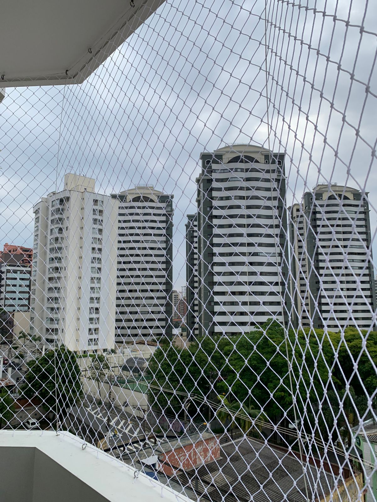
Medidas e fixação ajustadas ao local, com orientação de uso e conservação.
Pedir orçamentoDepoimentos publicados no Google pelo negócio WSILVA Redes.
Avaliação no Google · há cerca de 2 meses
Indico muito! Bom profissionalismo, e trabalho muito bem feito. A garantia é de 5 anos, isso é muito bom!!!
Avaliação no Google · há cerca de 2 meses
Ótimo trabalho, rápido e de boa qualidade, indico.
Avaliação no Google · há cerca de 4 meses
Excelente atendimento. Instalação perfeita. Eu e minha família estamos muito satisfeitos com o serviço prestado.
Trabalhamos com materiais com aprovação do Inmetro.
A durabilidade pode variar conforme exposição ao sol, maresia, manutenção e condições de uso.
Passo a passo simples, do primeiro contato à instalação.
Explica o imóvel e o que deseja proteger.
Isso agiliza a análise e a estimativa.
Você entende o escopo e as próximas etapas.
Combinamos o melhor horário e detalhes de acesso.
Com atenção a fixação, tração e acabamento.
Cuidados de uso e o que acompanha o serviço.
Informe o tipo do imóvel e os locais de instalação. A mensagem será montada automaticamente para agilizar seu atendimento.
Alguns exemplos de janelas e sacadas. No telefone, rolagem ou use os botões.
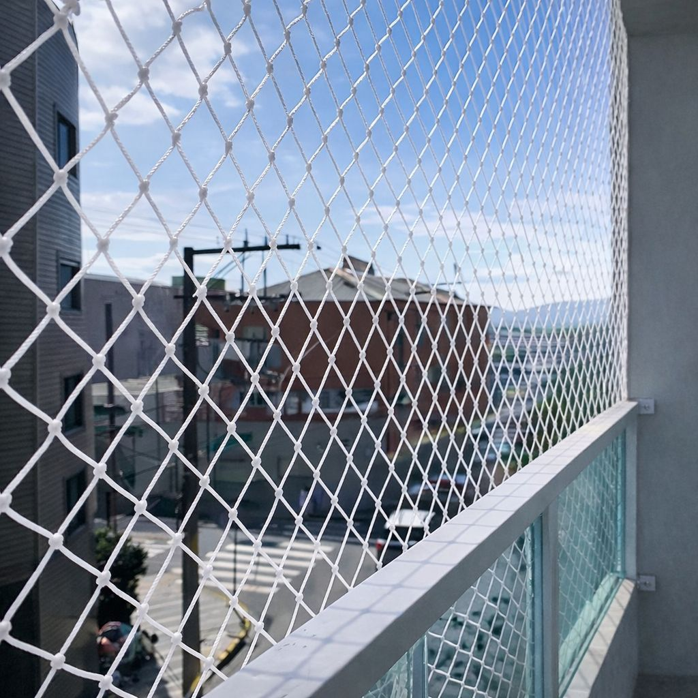
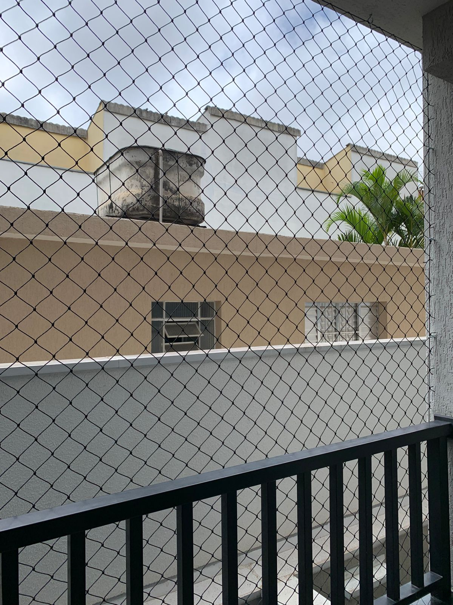
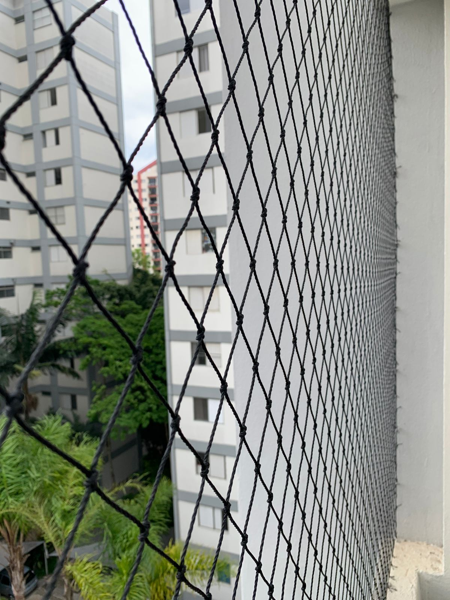
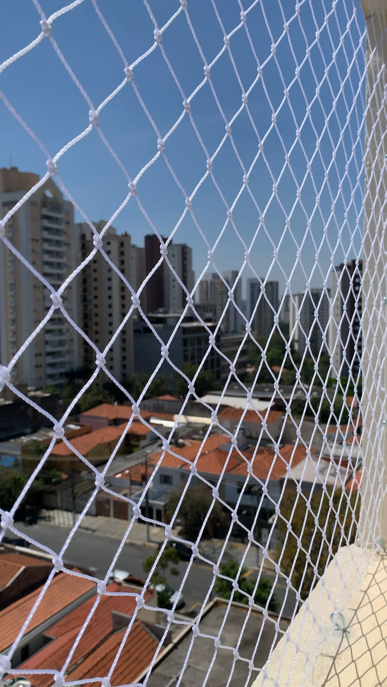
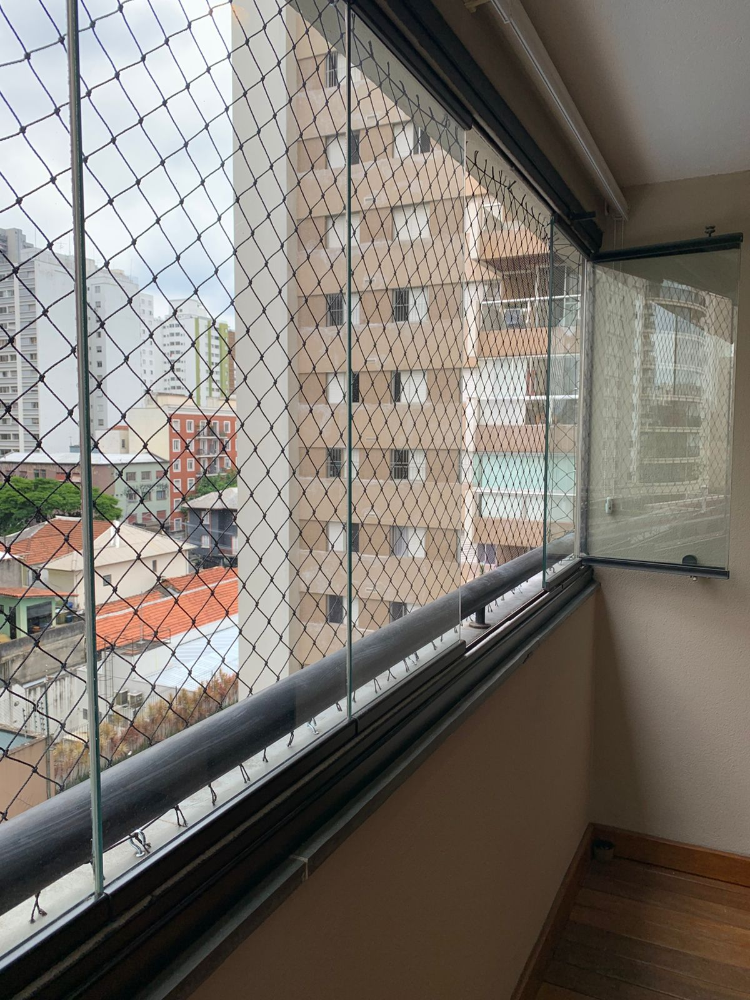
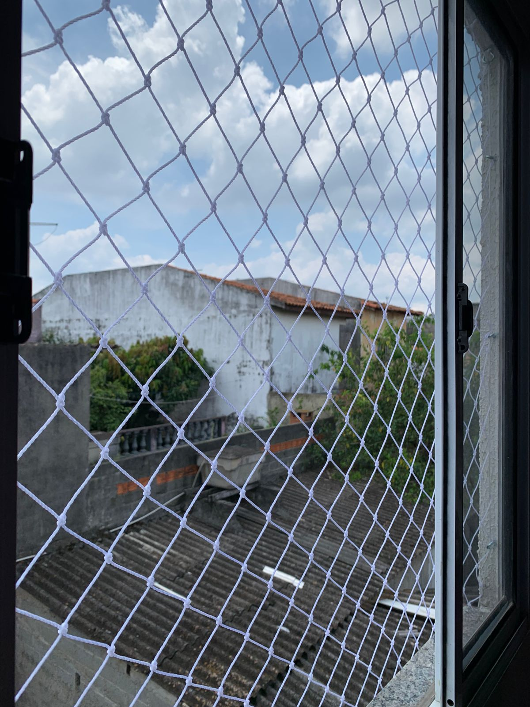
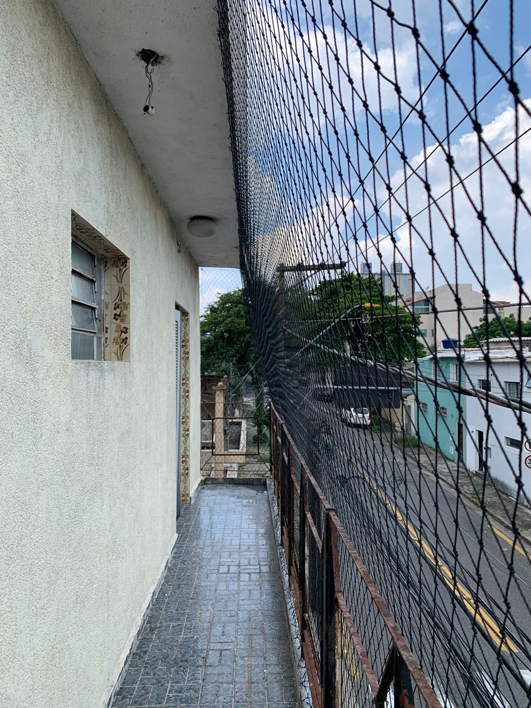
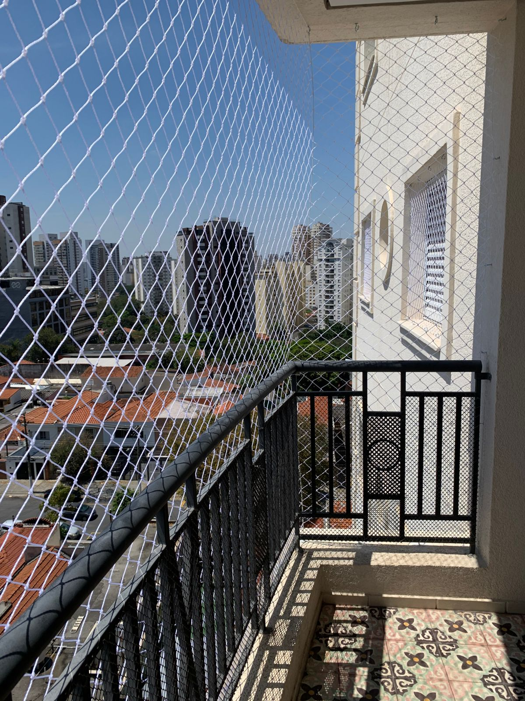
Não. As redes são feitas com fio 100% polietileno, material que não enferruja.
A durabilidade estimada é de 8 a 10 anos, podendo variar conforme sol, maresia, manutenção e uso.
Sim. As redes possuem garantia de 5 anos.
Sim. A rede de proteção ajuda a aumentar a segurança de pets em janelas e sacadas.
Não. A ideia é proteger sem eliminar a ventilação natural do ambiente.
Use o formulário acima, o WhatsApp ou a página de contato. Respondemos com orientação sobre fotos e medidas.
Fale com a WSILVA Redes e solicite seu orçamento pelo WhatsApp.
Solicitar orçamento